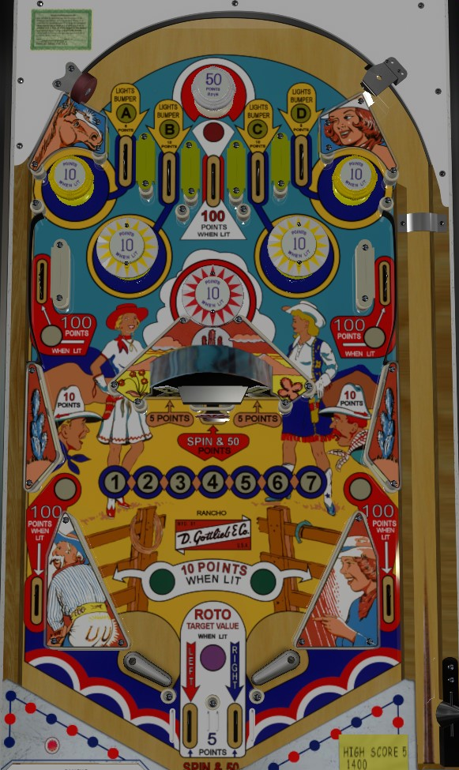

Buckaroo is the replay version. Cow Poke and Rancho are add-a-ball versions. Differences between the two are discussed throughout the guide as relevant.
Not to be confused with Buck Rogers (Gottlieb, 1980) or Rancho (Williams, 1976).
Complete the A-B-C-D top lanes to light the center top lane for Special (Buckaroo) or score an instant extra ball (Cow Poke / Rancho). Hit the center roto-target panels or drain down the center out lanes to earn 1-7 numbers. Making any sub-sequence of 4 in a row within the 1-7 awards a Special (Buckaroo) or extra ball (Cow Poke / Rancho). On Cow Poke / Rancho, the roto-target also has a Bullseye panel that awards extra ball instantly.
The below picture is of Rancho, which was taken from the VPX recreation by Loserman76.
Roll through a lit A-B-C-D top lane to unlight it. A and D lanes score 5 points, while B and C lanes score 10. The center top lane always scores 100 points. The white passive bumper above the top lanes scores 5 points and spins the roto-target. On Buckaroo only, the A and D lanes spin the roto-target as well.
Collecting A, B, C, and D lights the closest yellow bumper for 10 points instead of 1. (A and D correspond to passive bumpers, while B and C are pop bumpers.) On Buckaroo, when A-B-C-D is completed, all bumpers stay on and the center top lane is lit for Special for the rest of the game. On Cow Poke and Rancho, completing A-B-C-D scores an instant extra ball and resets the sequence, including unlighting all bumpers; the center top lane is never worth anything other than the 100 points.
Two panels of the roto-target are visible at any given time. Panels are numbered 1 through 7. Hit a panel to light that number on the playfield. Making any set of 4 in a row- 1-2-3-4, 2-3-4-5, 3-4-5-6, or 4-5-6-7- scores a Special on Buckaroo or an extra ball on Cow Poke and Rancho. Panel #4, which is required for any 4 in a row sequence, appears only one on the roto-target when all other numbers appear twice, making this a more difficult task than it initially seems. On Buckaroo, the center standup target scores 5 points and spins the roto-target, while hitting a roto panel scores 50 points. On Cow Poke and Rancho, these values are reversed, with the standup target scoring 50 and a spin, and panels scoring only 5 points. On Cow Poke and Rancho only, there is one panel on the roto-target with a Bullseye on it that scores an instant extra ball.
The upper side lanes, slingshots, and out lanes are lit alternately based on 1-point switch hits. On Buckaroo, upper side lanes and out lanes always spin the roto-wheel, and score 5 points when not lit or 50 points when lit. On Cow Poke and Rancho, upper side lanes and out lanes do not spin the roto-target, and these lanes score 10 points when not lit or 100 when lit. Slingshots score 1 point or 10 when lit on all versions. Exactly one top lane, one out lane, and one slingshot are always lit at any given time.
There are no in lanes. Flippers back up directly to the slingshots. The flippers are wider apart than normal, with space for two center out lanes between them; these lanes score 50 points (Buckaroo) or 5 points (Cow Poke / Rancho) and award whichever number is currently displayed in the left or right panel of the roto-target respectively.
There is no end of ball bonus, but all drained balls on Cow Poke and Rancho score 50 points and spin the roto-target when they reach the drain. Buckaroo does not have extra balls, and specials cannot be set to score points. I do not believe that extra balls on Cow Poke or Rancho can score points instead either. On Cow Poke, each extra ball earned increases the Balls To Play counter, which can count as high as 10. On Rancho, the Balls to Play counter maxes at 5, but up to 5 extra balls can be stored in memory at any one time, indicated by the birds in the top right of the backglass.